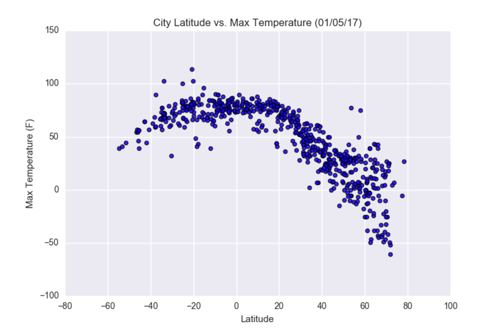

This plot takes a the distribution and relation between city types, fares, riders, and drivers. It shows some things you might expect, such as that rural rides are more expensive than urban rides probably due to farther distances between points.
One suprising finding is that the quantity of drivers doesn't seem to have a relationship with the quantity of rides given. There are a very high number of urban drivers, but the size of the bubbles indicates that there's not a huge demand for rides.